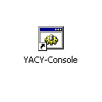

YACY is written entirely in Java (Version Java2 / 1.2 and up). Any system that supports Java2 can run YACY. That means it runs on almost any commercial and free platforms and operation systems that are around. This includes of course Mac OS X, Windows (NT, W2K, XP) and Linux systems. For java support of your platform, please see the installation documentation.
